В просторных залах для занятий мы предлагаем нашим Членам клуба передовые программы с
использованием специального оборудования: кардио-; силовые; функциональные.
Одна из программ функционального тренинга GYMSTIK -– как простой и эффективный способ
поддержания хорошей физической формы.
Уникальная программа «Здоровая спина» по авторской методике инструкторов нашего клуба —
для людей с нарушением опорно-двигательного аппарата.
Большой популярностью у наших Членов клуба пользуются танцевальные направления.
Для людей желающих обрести гармонию души и тела – наш клуб предлагает программы
восточных практик: йога; система ниши; тайчи; цигун.
Мы не оставили без внимания любителей единоборств: кикбоксинг, тхэквандо, бокс.
Все занятия в нашем клубе проходят под чутким руководством профессиональных инструкторов.

Групповые программы в Крылатском
Фитнес программы
Персональный тренинг
Студия пилатес
FitnessFly
Фитнес программы

Если Вы любите разнообразие и предпочитаете
заниматься фитнесом в хорошей компании среди единомышленников, рекомендуем Вам посетить наши
групповые занятия. Мы предлагаем более 40 различных видов групповых программ: Кардио и
танцевальные, силовые и функциональные, реабилитационные и восстановительные,
восточные оздоровительные практики и единоборства, а также авторские программы от наших
профессиональных инструкторов, которые помогут Вам не только улучшить свою внешнюю форму, но
и достичь внутренней гармонии с собой.
Квалифицированные
специалисты нашего фитнес клуба помогут Вам сориентироваться в расписании групповых программ
и подобрать подходящие для Вас уроки с учетом индивидуальных пожеланий, состоянием здоровья
и целей, которые Вы перед собой ставите.
Фитнес программы
Кардио - тренировки (тренировка сердца и дыхательной
системы)
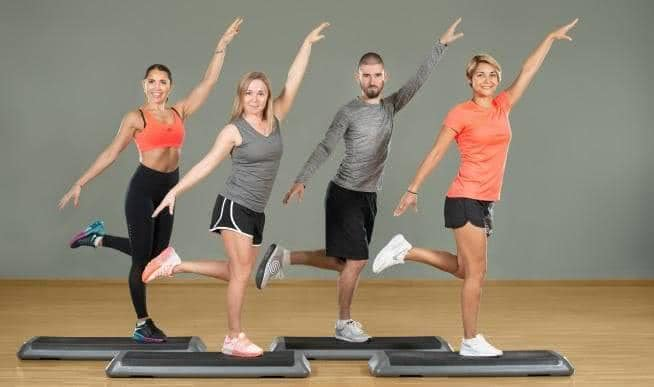
• Сycling: непревзойденная по динамичности и эффективности программа. Имитация велогонки на стационарных велосипедах. Уроки делятся на уровни: Basic - для начинающих, Interval - для уверенных в себе «велогонщиков».
• Step: тренировка на специальных степ- платформах. Позволяет одновременно получить максимум удовольствия от процесса и сжечь много калорий.
• Interval: тренировка, сочетающая аэробную и силовую части.
• Tai-Bo: тренировка с элементами техник ударов из различных единоборств: бокса, карате и кикбоксинга. Высокая интенсивность.
• Cardio Workout ( Aerobic Dance или Step 1): тренировка в формате танцевальной аэробики или степ - аэробики 1 уровня. Развивает координацию, улучшает работу cердечно - сосудистой системы и повышает настроение.
Силовые тренировки (укрепление и развитие мышц)
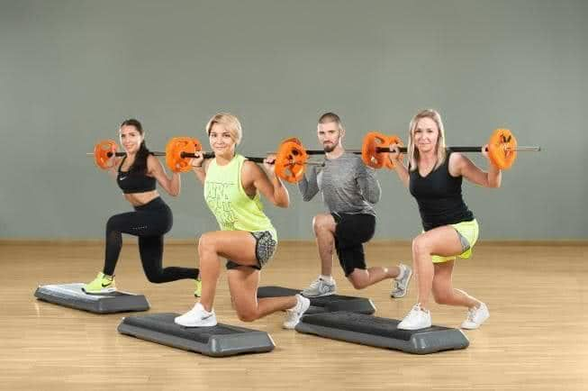
• Super Strong: урок, направленный на проработку всех мышечных групп.• Lower Body: тренировка для мышц ног, ягодиц, спины и живота.
• Upper body: комплексная тренировка мышц верхней части тела: груди, плеч, рук, верхней части спины и брюшного пресса.
• ABS: тренировка мышц пресса и спины.
Функциональный тренинг (тренировка для хорошо подготовленных людей)
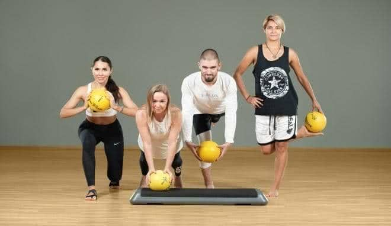
• Functional Training: используя дополнительное оборудование, нестандартные исходные положения и траектории движений, акцент на этих тренировках делается на мышцы, отвечающие за удержание баланса и стабильности.• Core Training: тренировка, цель которой развитие мышц центра, отвечающих за баланс и правильное распределение нагрузки по всему телу.
• Be Balanced - тренировка, направленная на развития баланса, мышц-стабилизаторов и развитие возможностей вашего тела.
• Athletic - интенсивная круговая тренировка с использованием новейшего оборудования и методик сделает Ваше тело более функциональным и развитым.
• Стань героем!: интенсивная функциональная тренировка. Только для хорошо подготовленных!
• BOSU: интенсивная функциональная тренировка на специальной балансировочной платформе, удержаться на которой довольно сложно, поэтому при выполнении упражнений на BOSU будут работать все мышцы вашего тела.
Специальные программы
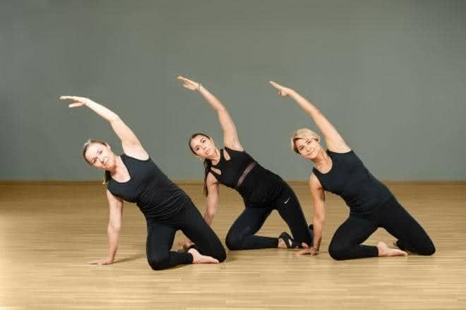
• Flex: урок необходимый всем и каждому! Гибкость - слабое звено многих людей, а между тем именно подвижность суставов, эластичность мышц и сухожилий определяет амплитуду наших действии в жизни, зачастую сильно ограничивая наши возможности.
• Relax: новое направление в фитнесе, возникновение которого продиктовано потребностью современного человека снять стресс, усталость, накопившееся мышечное напряжение. Позволяет расслабить глубокие и поверхностные мышечные структуры, увеличить подвижность суставов. Приятным дополнением станет ощутимый лимфодренажный эффект. Противопоказания - тромбофлебит
• Soft Class: "Мягкая" тренировка для пожилых людей, а так же для людей после тяжелых заболеваний и хирургических вмешательств, нуждающихся в постепенном «вхождении» в тренировочный процесс.
• Здоровая спина: уникальная программа, созданная инструкторами нашего клуба. Специально подобранный комплекс упражнений помогает растянуть мышцы спины, улучшить осанку, снизить болезненные ощущения в области позвоночника.
• Pilates: эта программа создана для того, чтобы вернуть позвоночнику его природную подвижность, которую мы теряем из-за неактивного образа жизни, и создать для него хорошую мышечную защиту. Кроме того именно на пилатесе прорабатываются глубокие мышцы живота, что нужно для двух целей: защита внутренних органов и плоский живот. Pilates Equipment - тренировка 2 уровня с использованием дополнительного оборудования
• Prenatal: Тренировка для женщин с нормальным течением беременности. В уроке сочетаются упражнения для укрепления мышц и поддержание гибкости.
Восточные практики
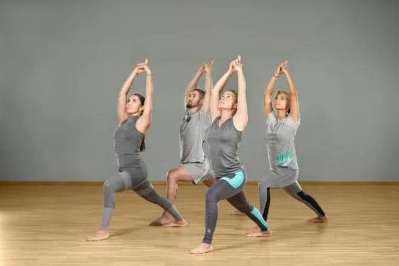
• Йога: психофизическая практика, основанная на древних асанах (позах), выполнение которых помогает сконцентрироваться на ощущениях своего тела, научиться контролировать дыхание, получить существенную нагрузку на мышцы, а также развить гибкость.
• Цигун: традиционное китайское искусство управления энергией, которая даст вам возможность отвлечься от повседневных социальных ролей и получать удовольствие от оздоровительных практик. Динамический
• Цигун: эта гимнастика активизирует энергетические системы организма, является хорошим методом профилактики болезней c помощью скручивания определенных частей тела.
• Самомассаж: выполняя специальные физические упражнения, Вы получите мощное оружие против «синдрома хронической усталости» болезни современного человека. Платная студия.
• Тай-Чи: традиционная китайская гимнастика, обеспечивающая высокую степень расслабления, равновесия и душевного покоя.
• В Ресурсе: комплекс упражнений из Йоги, Цигуна и Суставной гимнастики, направленный на формирование «Ресурсного состояния» тела и психики.
Танцевальные программы
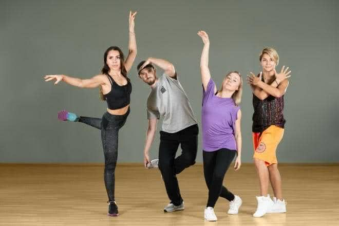
• Latino Dance: классические и современные латино- американские танцы (самба, румба, джайв, ча-ча-ча, аргентинское танго, сальса). Опытные педагоги обучат правильной технике танца и научат чувствовать ритм музыки.• MTV Dance: все самые интересные танцевальные стили, все самые последние музыкальные новинки, все, что танцуют в клубах.
• Dance Mix: любимые и популярные танцевальные стили: латина, джаз, фолк, рок-н-ролл. Каждый урок новый стиль, новый танец!
• Belly Dance: арабский танец. Красота тела, изящество, грация и хореография, передающая тонкость и загадочность Востока.
• Body Ballet: балетный экзерсис. Используются основные движения классического балета.
• Strip Dance: в основе уникального класса - изучение стрип-пластики. Урок помогает ощутить свободу движений и совершенствовать танцевальные навыки.
• Zumba: самая популярная танцевальная фитнес- программа! Доступная хореография, основанная на латино-американских танцах и драйв сделали ее популярной во всем мире. Главный девиз урока - танцевать может каждый!
• Port De Bras: - класс, основанный на движениях рук классической хореографии, направлен на формирование красивой осанки, развитие координации и гибкости. Совершенствуется способность чувствовать тело в пространстве и расслабляться во время движения.
• Free Dance - попробуйте танцевать не телом, а душой, подчиняясь не правилам, а настроению.
Единоборства
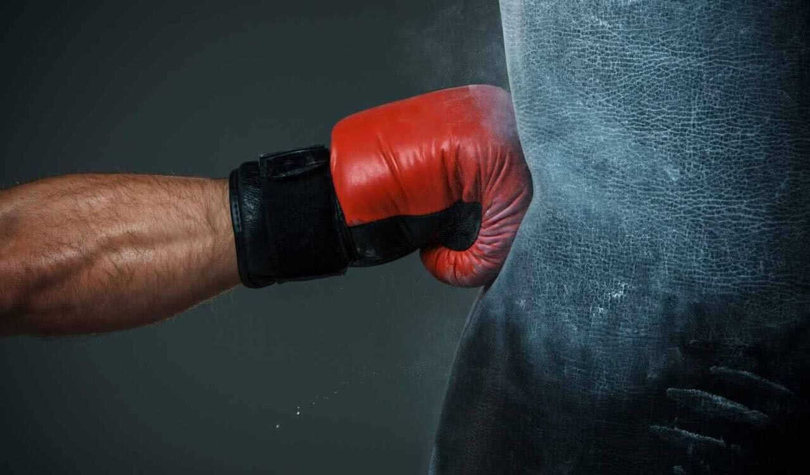
• Кикбоксинг на уроке обучают технике самозащиты, а также боевым ударам руками и ногами в сочетании с общей физической подготовкой.• Таэквондо корейское боевое искусство. Характерная особенность таеквондо - ноги в поединке используются более активно, чем руки.
• Бокс освоение методики и техники классического боксирования, представляющей собой совокупность приемов защиты и нападения.
Персональный тренинг
.jpg)
Каждый человек индивидуален. У каждого из нас есть свои особенности и изменения опорно-
двигательного аппарата, ограничения в движении. К тому же у всех разный уровень координации
и физической подготовки. Для того, чтобы максимально эффективно и безопасно тренироваться
каждому человеку нужен персональный тренер. Тренер знает, как сделать так, чтобы Ваше тело
стало более функциональным, управляемым и красивым.
Наши инструкторы специализируются на различных видах тренинга: сброс веса, улучшение
двигательных навыков, подготовка к различным соревнованиям, развитие пластики и
танцевальных навыков, постановка техники ударов в различных единоборствах, реабилитация,
работа с проблемами опорно-двигательного аппарата.
Грамотно построенные нашими инструкторами тренировки позволят Вам идти к своей цели без
риска для здоровья.
Персональный тренинг
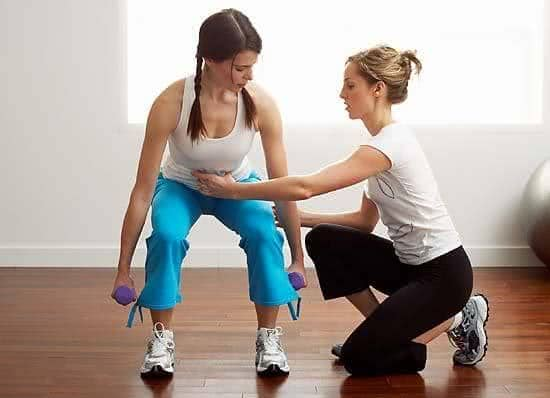
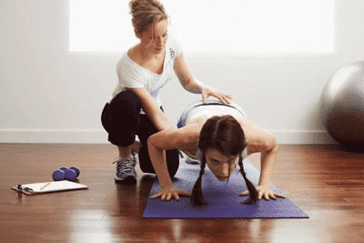
Не важно, какие направления вы выбираете — танцы, йогу пилатес, силовые или функциональные тренировки. В любом случае персональные тренировки принесут вам немалую пользу.Во-первых, вы получаете индивидуальный подход в тренировках. Учитывая ваши физические данные, уровень координации, тренер подберет упражнения максимально эффективные именно для вас упражнения и выстроит программу тренировок. Индивидуальный подход поможет вам быстрее получить желаемый результат.
Во-вторых, хороший тренер отвечает за вашу безопасность. И этот критерий персональных занятий, на наш взгляд — самый важный.
Тренировки, состоящие из неправильно выполняемых упражнений на специальном оборудовании или без него, могут не только не помочь вам быть в форме, но и навредить. Травмы, растяжения, ушибы, проблемы с суставами могут стать вашими верными попутчиками. Тренер будет следить за тем, чтобы любое упражнение было безопасным для вас, укажет на ошибки и поможет избежать их в будущем.
В-третьих, ваш тренер поможет настроиться на тренировку и будет вашим персональным мотиватором. Хороший специалист, а другой вам не нужен, сделает так, чтобы на тренировку хотелось лететь с работы, а во время нее — свернуть горы.
Студия пилатес
.jpeg)
Сегодня уже не секрет, насколько стремительно развивается метод
Пилатеса по миру. Россия - не
исключение. Все больше людей хотят индивидуального подхода к себе и к своему физическому
здоровью, ищут методики, которые им в этом могут помочь и, конечно же, ищут подходящего
тренера.
Почему же именно студия Пилатеса, а не просто групповой урок?
Потому что метод Пилатеса начинается со знакомства с оборудованием, а именно - с самым
широко известным - Реформером, Кадиллаком (столом-трапецией), Стулом, Бочкой с лестницей и
корректором позвоночника.
Эти особенным образом сконструированные аппараты позволяют решать одновременно
множество задач и справляются со сложностями, возникающими в процессе любой активной
физической деятельности (боли в спине, дискомфорт в суставах, жесткость связок).
Персональный
студийный подход в рамках индивидуальной работы с преподавателем Пилатеса позволит
улучшить результаты как в большом спорте, так и добиться поставленных целей в любом фитнес
направлении, будь - то тренажёрный зал, кроссфит, силовые или танцевальные классы, различные
виды стретча, и даже плавание (как профессионал или любитель).
Чтобы все эти уроки, которые доставляют вам удовольствие и сохраняют хорошее самочувствие -
были для Вас в первую очередь безопасны.
Студия пилатес
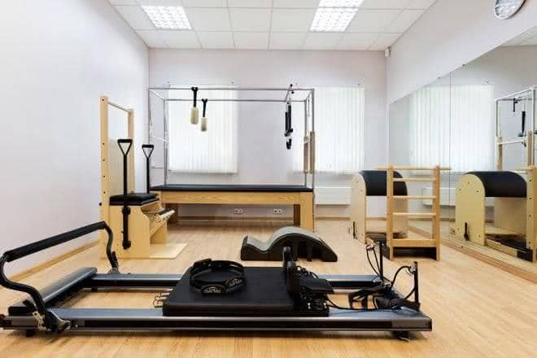
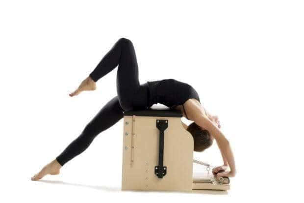
Каким образом работает практика Пилатеса в стенах студии и используя студийные аппараты?Метод Пилатеса - это система, обучающая Вас быть внимательными во время упражнения, потому что основывается на принципах, суть которых - умеренное воздействие на тело, не создавая перенапряжение.
В Системе Пилатеса, где нет места халатному отношению к телу - аппараты очень точно и чётко помогают осознать цель и суть того или иного движения, которые вы хотели бы исполнить на мате или в другом виде физической нагрузки, аппараты способны воссоздать правильную картину упражнения, в котором не будет неверных и опасных движений, используя сопротивление пружин и подвижность платформы (у Реформера), удерживая контроль и концентрацию при висах и перевёрнутых позах на кадиллаке.
Бочка и корректор спины помогут Вам подружиться с особенностями изгибов Вашего позвоночника, "услышать" сильные и слабые стороны Вашего тела, а стул с активной педалью создаст точную работу как мышц центра (глубоких мышц живота), так и мышц рук и ног, вовлекая в процесс движения все тело целиком.
Метод Пилатеса глубок и широк в применении: от реабилитации до атлетической силовой тренировки профессиональных спорстменов. Это та составляющая любой двигательной деятельности, которая позволит найти правильные ориентиры внутри себя, чтобы с максимальной пользой почувствовать свою силу, выносливость и гибкость.
FitnessFly
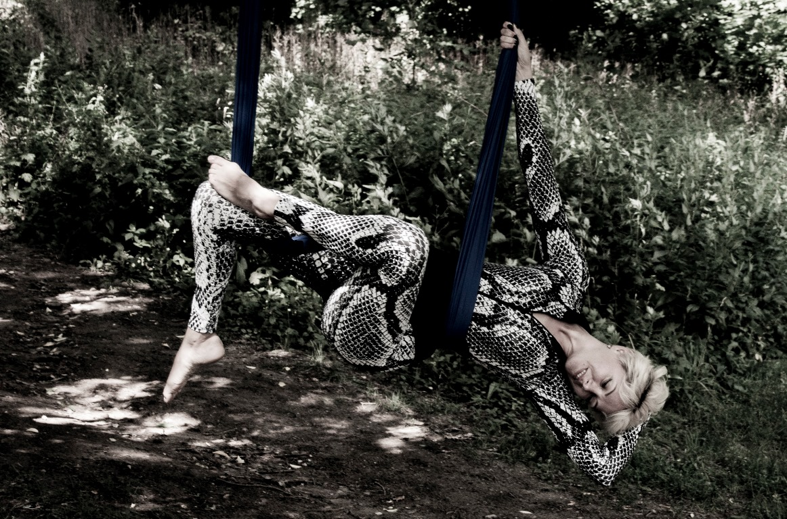
АFitness Fly – комплексная методика для улучшения общего состояния здоровья, направлена на декомпрессию позвоночника и выравнивание всего тела, с одновременным растяжением и укреплением мускулатуры...
FitnessFly
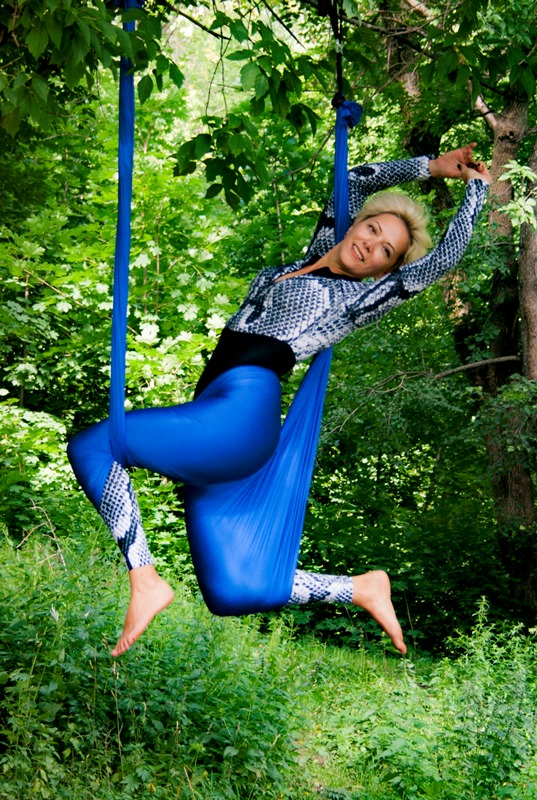
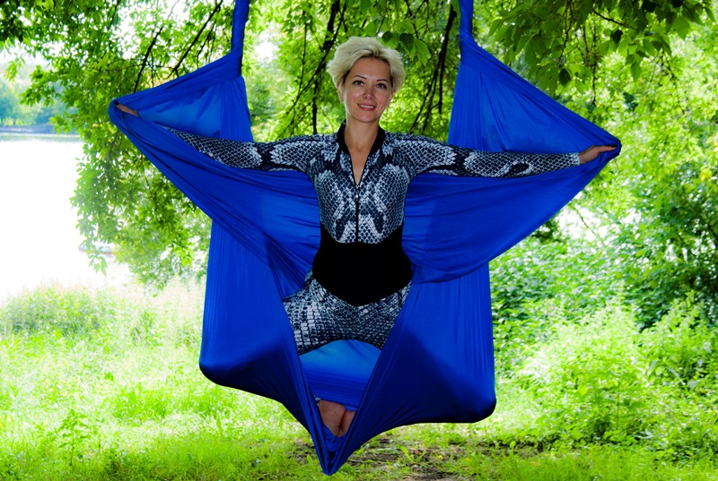
Эффекты от занятийУкрепление мышц всего тела.
В отличие от привычных тренировок на жесткой поверхности, гамак заставляет ваше тело адаптировался к новым условиям. Гамак качается, и вы качаетесь вместе с ним, благодаря этому все мышцы организма начинают более активно включаться в работу, стремясь удержать равновесие. Благодаря этому, развиваются все мышцы, и на вашем теле не остается непроработанных участков.
Эффективное восстановление
Медленные, ритмичные, повторяющиеся движения в удобном гамаке оказывают успокаивающее действие на нервную систему, снимают стресс, помогают в осознании своего тела, его расслаблению и самоконтролю.
Вытяжение позвоночника
Центральным элементом являются перевернутые позы во главе с декомпрессионным переворотом, который улучшает кровообращение мозга, способствует укреплению отдельных частей тела, нормализует сон, увеличивает концентрацию, наполняет тело силой и энергией. Декомпрессионный переворот словно вытягивает Ваш позвоночник, благодаря чему Ваша осанка заметно улучшится, а рост может увеличиться на 0,6 см.
Развитие гибкости
Растягивание мышц с помощью гамака происходит во время фазы расслабления. Благодаря гамаку, комплекс в гамаках помогает легко увеличивать амплитуду движений и делает занятие максимально эффективным.
Тренировка координации и баланса
Занятия в гамаках тренируют вестибулярный аппарат, играющий главную роль в сохранении равновесия человека. Положения «вниз головой» улучшают кровообращение, обеспечивая большим содержанием кислорода головной мозг. А это, в свою очередь, влияет на умственное функционирование, концентрацию, память и эмоции человека. Тренировка вестибулярного аппарата помогает оставаться организованным и сбалансированным.
Продление молодости и здоровья.
Тренировки в воздухе отлично снимают стресс, который является одним из основных факторов старения организма. Когда вы находитесь в перевёрнутом положении, ваш мозг получает очень хорошее кровоснабжение, а значит, он насыщается кислородом. Это оказывает положительное омолаживающее воздействие на все системы организма, сердечно-сосудистую, дыхательную, эндокринные системы, а также улучшает концентрацию и долговременную память.
Ограничений для занятий нет, но есть противопоказания для перевернутых поз:
Беременность. Глаукома. Недавно перенесенные операции (за последние 3 месяца). Чрезмерно высокое или низкое давление. Склонность к обморокам. Артрит. Синусит. Недавно перенесенный инсульт. Склероз головного мозга. Косметические инъекции (за последние 12 часов).
Что надеть на тренировку?
Одежду, прилегающую к телу, но не сковывающую движения. Подойдет любая нескользящая одежда из хлопка, желательно с длинными рукавами, чтобы защитить руки и ноги. Украшения лучше оставить дома или снять перед занятием.
Можно ли заниматься Fitness Fly при болях в спине?
Практики направления подтверждают, что в гамаке нагрузка на позвоночник полностью исключается.
Запись в мини-группу ведется на рецепции клуба.
Согласие на обработку персональных данных
Настоящим я даю свое согласие на обработку ООО «ФИТНЕС НА ХОЛМАХ» ОГРН 1207700152219 , 121614, г. Москва, ул. Крылатские холмы, д. 35 (далее по тексту — «Компания») моих персональных данных и подтверждаю, что давая такое согласие, я действую своей волей и в своем интересе. Согласие распространяется на информацию, вводимую в полях регистрации данного сайта Компании (имя, фамилия, e-mail, номер телефона). Согласие на обработку персональных данных дается мною в целях получения услуг, оказываемых Компанией. Обработка персональных данных осуществляется Компанией следующими способами: обработка персональных данных с использованием средств автоматизации, обработка персональных данных без использования средств автоматизации (неавтоматизированная обработка). При обработке персональных данных Компания не ограничена в применении способов их обработки. Согласие предоставляется на осуществление любых действий в отношении персональных данных, которые необходимы для достижения вышеуказанных целей, включая без ограничения: сбор, систематизацию, накопление, хранение, уточнение (обновление, изменение), использование, распространение (в том числе передача), обезличивание, блокирование, уничтожение, а также осуществление любых иных действий с персональными данными в соответствии с действующим законодательством. Настоящим я признаю и подтверждаю, что в случае необходимости предоставления персональных данных для достижения указанных выше целей третьему лицу, а равно как при привлечении третьих лиц к оказанию услуг в указанных целях, передаче Компанией принадлежащих ей функций и полномочий иному лицу, Компания вправе в необходимом объеме раскрывать для совершения вышеуказанных действий информацию обо мне лично таким третьим лицам, их агентам и иным уполномоченным ими лицам, а также предоставлять таким лицам соответствующие документы, содержащие такую информацию. Также настоящим признаю и подтверждаю, что настоящее согласие считается данным мною любым третьим лицам, указанным выше, с учетом соответствующих изменений, и любые такие третьи лица имеют право на обработку персональных данных на основании настоящего согласия. Настоящее согласие дается мною бессрочно, но может быть отозвано посредством направления мною письменного уведомления Компании не менее чем за 1 (один) месяц до момента отзыва согласия.